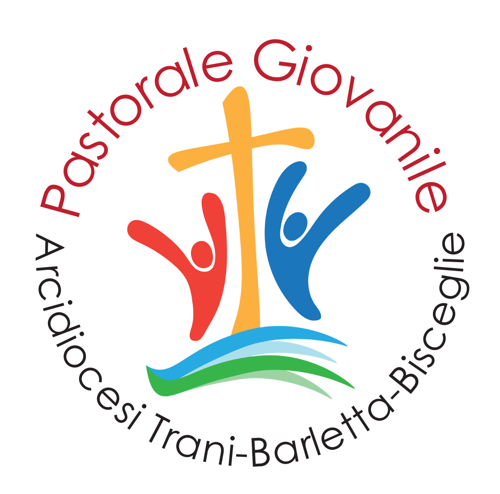
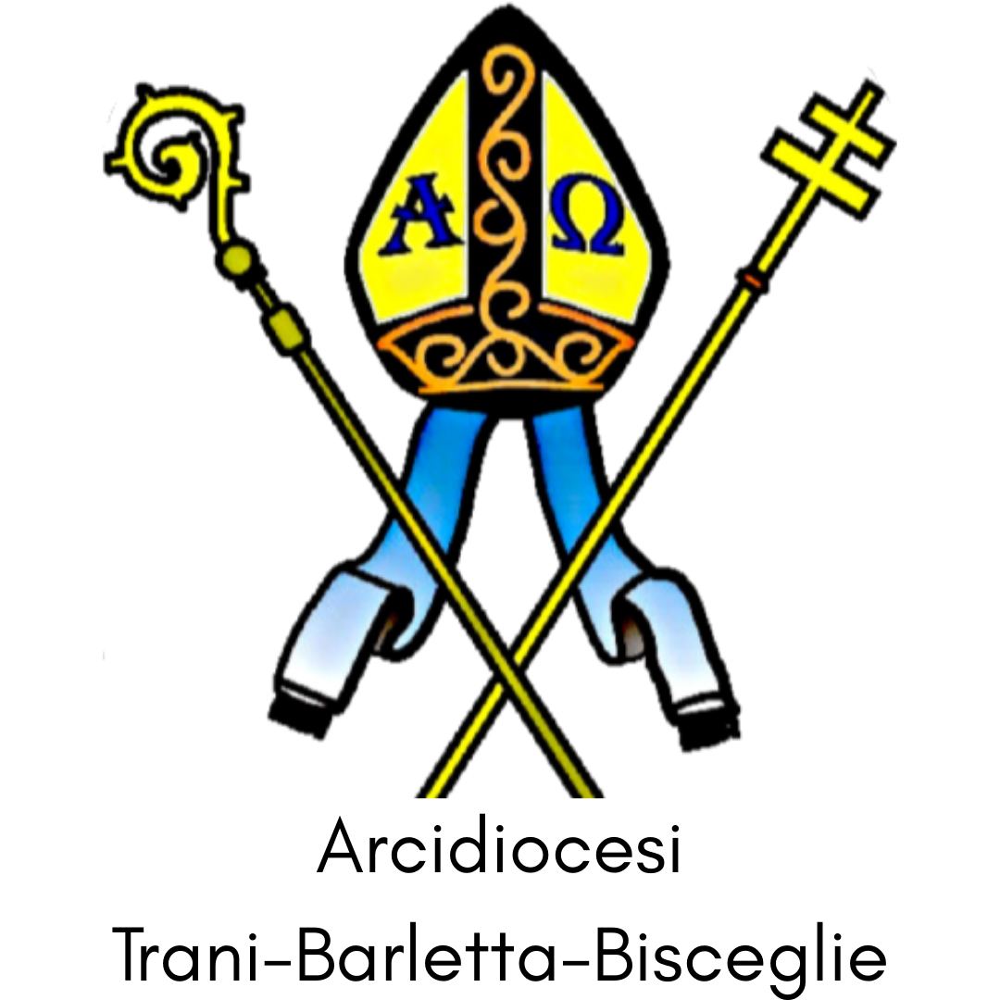

XIX Meeting Giovanissimi
MeTeenGo
adolescenti in viaggio
« Il viaggio con Gesù »
Ven 17 Aprile · Serate cittadine
Dom 19 Aprile · PALACOSMAI, Bisceglie


XIX Meeting Giovanissimi
adolescenti in viaggio
« Il viaggio con Gesù »